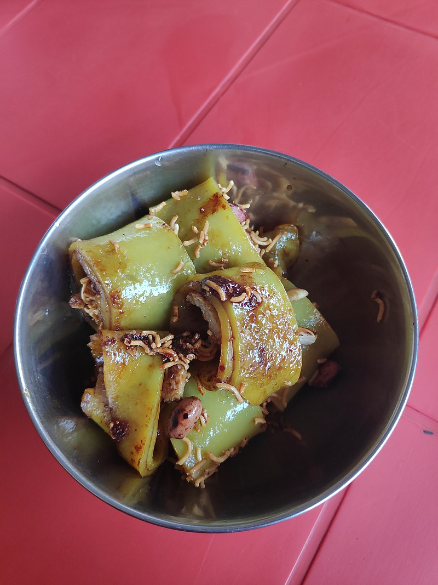

Momo

Description
Laping is a spicy cold mung bean noodle dish in Tibetan cuisine. It is a street food and is also popular in Nepal.It can be eaten with red pepper chili, coriander and green onion sauce.
Ingredients
- Flour
- Soy sauce
- Wai wai
- Spices
- Chilli oil
Steps
- Take flour and wash it under cold water until gluten is separated. Don't throw the white water after the wash.
- Take the gluten and let it rest for about 15 minutes before steaming it.
- Keep aside the white water for about 4 hours. Throw the water at the top and what your are left with is starch.
- Take a greased plate and add the starch in a thin layer and steam it.
- Take a sheet made from starch then add the small bits of gluten along with chilli oil,wai wai and soy sauce. Roll it up and cut in bite size pieces.
- Serve and enjoy!